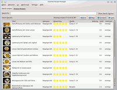
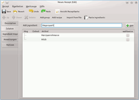

Gourmet Rezept Manager
Dieser Artikel wurde für die folgenden Ubuntu-Versionen getestet:
Ubuntu 16.04 Xenial Xerus
Ubuntu 14.04 Trusty Tahr
Zum Verständnis dieses Artikels sind folgende Seiten hilfreich:
Archive entpacken, optional
Ein Terminal öffnen, optional
Der Gourmet Rezept Manager  (auf Englisch: Gourmet Recipe Manager) ist ein Programm, mit dem man Rezepte erfassen und verwalten kann. Die Rezepte lassen sich kategorisieren, bewerten und es besteht die Möglichkeit, Rezepte per Volltextsuche zu durchsuchen (z.B. um alle Rezepte mit einer bestimmten Zutat zu finden).
(auf Englisch: Gourmet Recipe Manager) ist ein Programm, mit dem man Rezepte erfassen und verwalten kann. Die Rezepte lassen sich kategorisieren, bewerten und es besteht die Möglichkeit, Rezepte per Volltextsuche zu durchsuchen (z.B. um alle Rezepte mit einer bestimmten Zutat zu finden).
Weiterhin gibt es zahlreiche Import-/Exportformate, die Option zur automatischen Generierung von Einkaufslisten und die Möglichkeit, mithilfe der Verbindung zur USDA National Nutrient Database automatisch Nährwerttabellen zu erstellen.

Der Gourmet Rezept Manager ist weitestgehend in Python geschrieben und nutzt SQLite für die Datenspeicherung. Das Programm ist primär auf GNOME als Desktop ausrichtet, läuft aber auch auf allen anderen auf GTK-basierten Umgebungen (z.B. Xfce). Es funktioniert grundsätzlich auch unter KDE, allerdings werden dort sehr viele GTK-Pakete benötigt.
Installation¶
Das Programm ist in den Paketquellen vorhanden. Es kann über das folgende Paket installiert[1] werden:
gourmet (universe)
 mit apturl
mit apturl
Paketliste zum Kopieren:
sudo apt-get install gourmet
sudo aptitude install gourmet
Optional kann man auch noch folgende Pakete dazu installieren:
python-reportlab (für PDF-Export)
python-gst0.10
python-gtkspell (universe)
python-poppler (universe)
python-beautifulsoup (für das Web-Import-Plugin)
mit apturl
Paketliste zum Kopieren:
sudo apt-get install python-reportlab python-gst0.10 python-gtkspell python-poppler python-beautifulsoup
sudo aptitude install python-reportlab python-gst0.10 python-gtkspell python-poppler python-beautifulsoup
Manuell¶
Möchte man eine aktuellere Version testen, muss man sich diese als .tar.bz2-Archiv herunterladen  . Anschließend müssen folgende Pakete installiert werden:
. Anschließend müssen folgende Pakete installiert werden:
python-gtk2
python-sqlalchemy
python-imaging
python-elib.intl
python-dev
python-distutils-extra
mit apturl
Paketliste zum Kopieren:
sudo apt-get install python-gtk2 python-sqlalchemy python-imaging python-elib.intl python-dev python-distutils-extra
sudo aptitude install python-gtk2 python-sqlalchemy python-imaging python-elib.intl python-dev python-distutils-extra
Dann muss man das heruntergeladene Archiv entpacken [2]. Danach öffnet man ein Terminal[3] und wechselt in das entpackte Verzeichnis (z.B. /home/BENUTZERNAME/gourmet-0.16.0/) und führt dort folgenden Befehl mit Root-Rechten aus:
sudo python setup.py install
Hinweis!
Fremdsoftware kann das System gefährden.
KDE¶
Möchte man den Rezept-Manager unter KDE 4 installieren, so müssen für die Installation hier zusätzlich folgende Pakete installiert werden, sofern noch nicht geschehen:
python-gtk2
python-glade2 (nur für Gourmet-Versionen vor 0.16.0)
mit apturl
Paketliste zum Kopieren:
sudo apt-get install python-gtk2 python-glade2
sudo aptitude install python-gtk2 python-glade2
Hinweis:
Beide Python-Pakete installieren sehr viele GTK-Bibliotheken zusätzlich!
Benutzung¶
Gestartet werden kann der Rezept Manager über den Menüeintrag "Zubehör -> Gourmet Recipe Manager". Der KDE-Menüeintrag befindet sich unter "Programme -> Dienstprogramme -> Gourmet Rezept Manager". Das Programm ist weitestgehend (aber nicht komplett) übersetzt, die Bedienung ist logisch und selbsterklärend. Deshalb wird im Folgenden nur auf einige Punkte eingegangen.
Nach dem Start sieht man die leere Rezeptansicht. Nach einem Klick auf "Neues Rezept" öffnet sich ein weiteres Fenster und man kann ein Rezept manuell erfassen. Das Programm bietet aber auch die Möglichkeit, Rezepte zu importieren. Die Rezepterfassung ist in vier Punkte unterteilt, welche in der linken Spalte aufgeführt sind. Unter "Beschreibung" kann man den Rezeptnamen, die Zubereitungszeit, die Kategorie, die (persönliche) Bewertung und weitere, allgemeine Punkte eingeben. Unter "Zutaten" kann man - wie der Name schon vermuten lässt - die Zutaten für das Rezept erfassen. Dies gelingt komfortabler in der detaillierten Ansicht, welche sich durch einen Klick auf "Details" öffnet. Der Rezept Manager bietet eine Menge voreingestellter Einheiten wie Gramm, kleine Dose, große Dose, Stück uvm. Sofern die Zutat in der Datenbank hinterlegt ist, wird diese automatisch einer "Shopping Category" zugeordnet.

Unter "Anweisung" gibt man die Zubereitung des Rezepts ein, der Text kann hier auch fett, kursiv oder unterstrichen formatiert werden. Unter "Notizen" können Bemerkung, Hinweise u.ä. erfasst werden. Ein Klick auf "Speichern" fügt das Rezept der Sammlung hinzu, es erscheint jetzt auch in der Rezeptansicht.
Rezepte importieren¶
Neben der Erfassung von Rezepten von Hand besteht auch die Möglichkeit, fertige Rezepte zu importieren. Dies kann entweder aus Rezeptsammlungen wie Mealmaster geschehen, aus Sicherungen anderer Gourmet Rezept Manager Datenbanken oder aus einfachen Textdateien. Beim Import aus Textdateien wird zuerst die Datei ausgewählt, dann die Zeichenkodierung (der Datei) festgelegt, der Text erscheint dann (unformatiert) in einem neuen Fenster. Hier kann man nun einzelne Worte oder Textpassagen markieren und für den Rezept Manager als "Zutatenliste", "Rezeptname", "Anweisung" usw. markieren. Ein Klick auf "Übernehmen" fügt das Rezept der Datenbank hinzu.
Rezepte exportieren und drucken¶
In der Rezeptkarten-Ansicht (eines einzelnen Rezepts) kann man über "Recipe -> Print" das Rezept drucken lassen. Über "Recipe -> Export" lässt sich das Rezept in diverse Formate exportieren, u.a. auch als PDF oder HTML-Datei.
Möchte man alle Rezepte exportieren, so wählt man im Hauptfenster "Datei -> Alle Rezepte exportieren"; hier stehen die selben Zielformate wie für die Einzelrezepte bereit. Möchte man das/die Rezept(e) an einen anderen Nutzer des Gourmet Rezept Managers verschicken, so empfiehlt sich der Export ins Programm-eigene XML-Format (Dateiendung .gxml).
Einkaufszettel erstellen¶
Der Rezept Manager bietet weiterhin die Möglichkeit, aus der Zutatenliste automatisch einen Einkaufszettel zu generieren. Dazu wählt man in der Rezeptansicht ein Rezept, woraufhin sich die Rezeptansicht öffnet. Klickt man jetzt rechts oben auf "Shop" wird der Einkaufszettel generiert, sortiert nach den Kategorien wie "Fleisch", "Gemüse" etc. Möchte man für mehrere Rezepte einkaufen, so schließt man einfach die Rezeptkarte, öffnet eine weitere und klickt wieder auf "Shop". Der Einkaufszettel wird dann automatisch erweitert.
Nachkochen¶
Gibt man die Garzeit im Langtext in Minuten an, so kann man aus dem Rezept heraus sowohl unter GNOME wie auch unter KDE 4 den Kurzzeitwecker starten, der einen nach Ablauf der im Rezept angegebenen Minuten an das fertige Mahl erinnert.
Einheiten umrechnen¶
Unter "Werkzeuge -> Einheiten umrechnen" findet man einen nützlichen Einheitenrechner, der zwischen allen gängigen Einheiten umrechnen kann. Als witziges Add-On findet sich die Möglichkeit, die physikalische Dichte von diversen Zutaten nachschlagen zu können.
Links¶
Diskussion im Forum zum Rezept Manager, enthält auch einige Rezepte
Kochwiki
 -aus dem Rezepte-Wiki hervorgegangenes Wiki
-aus dem Rezepte-Wiki hervorgegangenes WikiDas Netz-Kochbuch
- Die Rezepte-Sammlung der Unix-AG, Technische Universität Kaiserslautern
- Erstellt mit Inyoka
-
 2004 – 2017 ubuntuusers.de • Einige Rechte vorbehalten
2004 – 2017 ubuntuusers.de • Einige Rechte vorbehalten
Lizenz • Kontakt • Datenschutz • Impressum • Serverstatus -
Serverhousing gespendet von